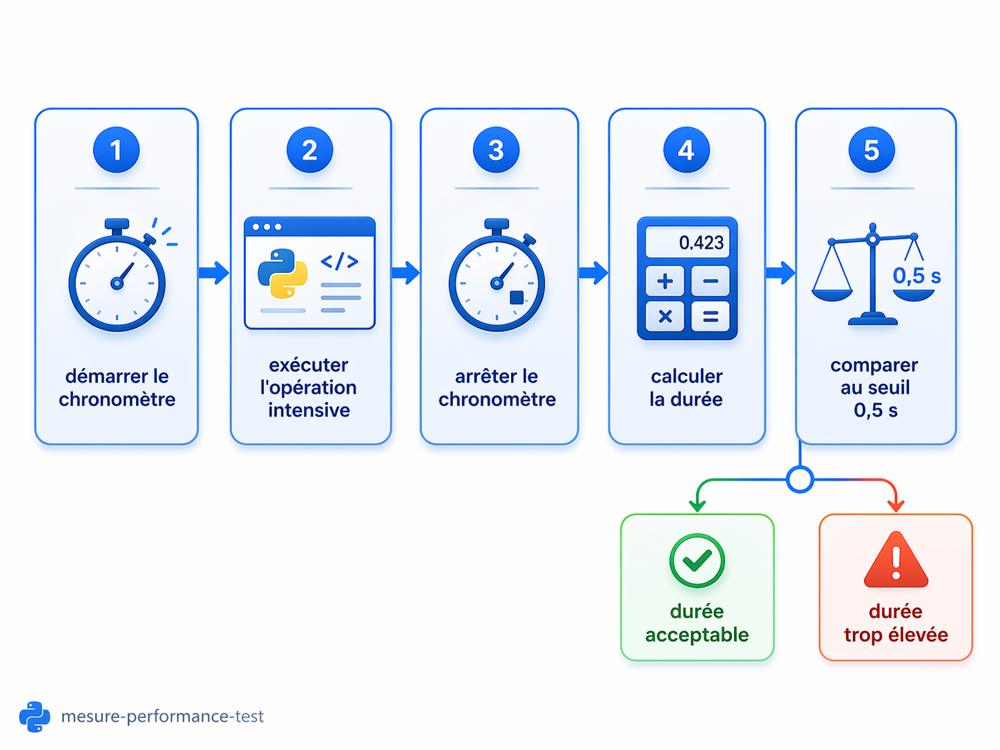
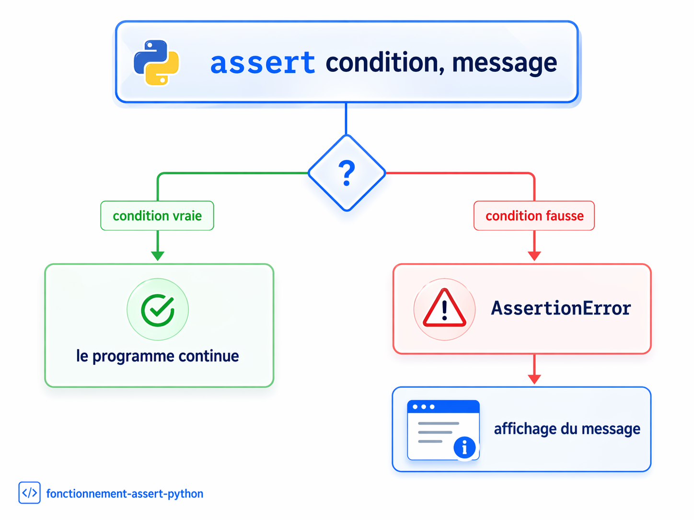

Anis Ghaiebbaniss2002@gmail.com


Assurance qualité par les tests
Cette leçon explique comment améliorer un programme Python de gestion des étudiants en ajoutant des assertions. L’objectif est de rendre le programme plus fiable : il doit accepter les données valides, mais aussi détecter les situations anormales comme un nom vide, un identifiant invalide, un téléphone mal écrit, un étudiant inexistant ou des données incorrectes dans un fichier.
Table des matières
Objectifs de la leçon
- Comprendre le rôle de l’assurance qualité dans un programme.
- Expliquer à quoi sert une assertion en Python.
- Analyser un programme existant de gestion des étudiants.
- Choisir des conditions de validation pertinentes.
- Ajouter des assertions aux bons endroits dans le code.
- Tester le programme avec des données valides et invalides.
- Documenter les résultats des tests de manière claire.
- Présenter un code final propre, vérifié et lisible.
Comprendre l’assurance qualité
Le rôle de l’assurance qualité
L’assurance qualité consiste à vérifier qu’un programme respecte les règles attendues et qu’il fonctionne correctement dans plusieurs situations. Dans une application de gestion des étudiants, le programme ne doit pas seulement fonctionner quand les données sont parfaites. Il doit aussi empêcher l’enregistrement de données incorrectes.
Par exemple, il ne devrait pas être possible d’enregistrer :
- Un étudiant sans nom.
- Un ID négatif.
- Un numéro de téléphone contenant des lettres.
- Deux étudiants avec le même ID.
- Des données mal formées provenant d’un fichier.
Idée clé : l’assurance qualité protège le programme contre les données incorrectes et rend son comportement plus fiable.
Pourquoi tester un programme ?
Tester un programme permet de vérifier son comportement dans des situations différentes. Il faut tester les cas valides, mais aussi les cas invalides. Un programme qui accepte seulement les bonnes données sans détecter les mauvaises n’est pas encore fiable.
Exemple de cas valide
ID : 1
Nom : Amine
Téléphone : 5141234567
Ici, l’ID est positif, le nom n’est pas vide et le téléphone contient exactement 10 chiffres.
Exemples de cas invalides
ID : -3
Nom : Amine
Téléphone : 5141234567
ID : 2
Nom :
Téléphone : 5141234567
ID : 3
Nom : Sarah
Téléphone : 12345

Remarque importante : un programme qui ne plante pas n’est pas forcément correct. S’il accepte un téléphone de 4 chiffres, il peut continuer à fonctionner, mais la donnée enregistrée reste mauvaise.
Comprendre les assertions en Python
Définition d’une assertion
Une assertion est une instruction Python qui vérifie qu’une condition est vraie. Si la condition est vraie, le programme continue normalement. Si la condition est fausse, Python arrête l’exécution et affiche une erreur de type AssertionError.

Exemple simple
Dans l’exemple suivant, Python vérifie que l’âge est supérieur ou égal à zéro. Si age vaut 18, tout va bien. Si age vaut -5, l’assertion échoue, car un âge négatif n’est pas logique.
Exemple appliqué aux étudiants
Pour un étudiant, le nom ne doit pas être vide. La méthode strip() enlève les espaces au début et à la fin du texte. Cela évite qu’un nom composé uniquement d’espaces soit accepté.
Pourquoi ajouter un message d’erreur ? Le message rend l’assertion plus claire. Si l’erreur se produit, on comprend immédiatement quelle règle n’a pas été respectée.
Présenter le programme de départ
Rôle général du programme
Le programme de départ est une application console en Python. Une application console fonctionne dans le terminal : l’utilisateur lit un menu, tape un choix, puis entre les informations demandées.
Le programme permet de gérer une liste d’étudiants avec cinq actions principales :
- Afficher les étudiants.
- Ajouter un étudiant.
- Modifier un étudiant.
- Supprimer un étudiant.
- Quitter.
Chaque action correspond à une fonction du programme :
- charger_etudiants() charge les étudiants depuis le fichier.
- afficher_etudiants() affiche les étudiants.
- ajouter_etudiant() ajoute un étudiant.
- modifier_etudiant() modifie un étudiant existant.
- supprimer_etudiant() supprime un étudiant.
- sauvegarder_etudiants() sauvegarde les étudiants dans le fichier.
Le fichier etudiants.txt
Le programme utilise un fichier nommé etudiants.txt. Ce fichier sert à conserver les informations des étudiants même après la fermeture du programme.
Exemple de contenu possible :
1,Amine,5141234567 2,Sarah,4389876543 3,Youssef,5145552222
Chaque ligne contient trois informations séparées par des virgules : l’ID, le nom et le numéro de téléphone.
La structure d’un étudiant
Dans le programme, chaque étudiant est représenté par un dictionnaire Python. Un dictionnaire associe des clés à des valeurs.
- La clé id contient l’identifiant de l’étudiant.
- La clé nom contient le nom.
- La clé tel contient le numéro de téléphone.
Choisir les conditions de validation
Conditions possibles
Dans ce travail, il faut choisir des conditions de validation parmi celles proposées, puis les vérifier avec des assertions. La consigne finale demande de choisir 10 conditions et de les ajouter aux bons endroits dans le code.
| No | Condition de validation | Type de contrôle |
|---|---|---|
| 1 | L’ID de l’étudiant doit être un entier positif. | Donnée |
| 2 | Le nom de l’étudiant ne doit pas être vide. | Donnée |
| 3 | Le numéro de téléphone doit contenir exactement 10 chiffres. | Donnée |
| 4 | L’ID d’un étudiant doit être unique lors de l’ajout. | Opération d’ajout |
| 5 | Le nom de l’étudiant ne doit pas dépasser 50 caractères. | Donnée |
| 6 | Lors de la modification, l’ID doit exister dans la liste des étudiants. | Opération de modification |
| 7 | Lors de la suppression, l’ID doit exister dans la liste des étudiants. | Opération de suppression |
| 8 | La liste des étudiants ne doit pas être vide avant l’affichage. | Opération d’affichage |
| 9 | Lors de l’affichage, chaque étudiant doit avoir un ID, un nom et un numéro de téléphone valides. | Contrôle global |
| 10 | Le fichier etudiants.txt doit exister avant de charger les données. | Fichier |
| 11 | Les données chargées depuis le fichier doivent respecter les validations. | Fichier |
À retenir : certaines conditions vérifient les données elles-mêmes, comme l’ID, le nom et le téléphone. D’autres vérifient une opération, par exemple modifier un étudiant seulement si son ID existe.
Placer les assertions dans le programme
Dans la fonction d’ajout
La fonction ajouter_etudiant() récupère l’ID, le nom et le téléphone saisis par l’utilisateur. C’est donc un endroit important pour vérifier les données avant d’ajouter l’étudiant dans la liste.
La liste [e["id"] for e in etudiants] permet de récupérer tous les ID déjà utilisés. Elle sert ici à empêcher l’ajout de deux étudiants avec le même ID.
Erreur fréquente à éviter : il ne faut pas vérifier seulement que le téléphone a 10 caractères. La valeur 514ABC7890 contient 10 caractères, mais ce n’est pas un numéro valide.
Dans la fonction de modification
La fonction modifier_etudiant() demande l’ID de l’étudiant à modifier. Avant toute modification, il faut vérifier que cet ID existe réellement dans la liste.
Dans le code de départ, si l’utilisateur laisse le nouveau nom vide, le programme garde l’ancien nom. Cette logique peut être conservée. Dans ce cas, il faut vérifier seulement les nouvelles valeurs réellement saisies.
Dans la fonction de suppression
La fonction supprimer_etudiant() demande l’ID de l’étudiant à supprimer. Avant de supprimer, il faut vérifier que l’étudiant existe.
Dans la fonction d’affichage
La fonction afficher_etudiants() affiche la liste des étudiants. On peut vérifier deux éléments : la liste n’est pas vide avant l’affichage, et chaque étudiant possède des données valides.
Dans le code de départ, si la liste est vide, le programme affiche simplement le message suivant :
Aucun étudiant enregistré.
Si la condition « la liste ne doit pas être vide avant d’afficher les étudiants » est choisie, l’assertion change ce comportement. Le programme signalera une erreur au lieu d’afficher ce message. Il faut donc être capable d’expliquer ce choix.
Dans la fonction de chargement
La fonction charger_etudiants() lit les données depuis le fichier. Elle peut vérifier que le fichier existe avant la lecture, puis contrôler chaque ligne lue.
Avant de tester cette partie, il est utile de créer volontairement une erreur dans le fichier etudiants.txt, par exemple un téléphone trop court. Ensuite, le programme peut être lancé pour vérifier si l’assertion détecte le problème.
Suivre une méthode de travail
Étapes recommandées
- Lire le code de départ. Avant de modifier le programme, il faut comprendre le rôle de chaque fonction : lecture, ajout, modification, suppression, affichage et sauvegarde.
- Choisir les conditions. Il faut choisir 10 conditions parmi la liste proposée et les écrire clairement dans le document Word.
- Ajouter les assertions. Il ne faut pas placer toutes les assertions au même endroit. Chaque assertion doit être placée là où la donnée est utilisée ou modifiée.
- Tester le programme. Les tests doivent inclure des scénarios valides et invalides.
- Documenter les résultats. Les captures d’écran doivent montrer l’action effectuée, les données entrées, le résultat obtenu et le message d’erreur si une assertion échoue.
- Préparer le fichier final. Le fichier Word doit contenir le nom, le code étudiant, les conditions choisies, le code final, les preuves de test et de courtes explications si nécessaire.
Repère pratique : les assertions sur les données saisies se placent dans ajouter_etudiant(), l’existence d’un ID à modifier dans modifier_etudiant(), l’existence d’un ID à supprimer dans supprimer_etudiant(), et les validations de fichier dans charger_etudiants().
Tests recommandés
- Ajouter un étudiant valide.
- Ajouter un étudiant avec un ID négatif.
- Ajouter un étudiant avec un nom vide.
- Ajouter un étudiant avec un téléphone invalide.
- Ajouter un étudiant avec un ID déjà existant.
- Modifier un étudiant existant.
- Modifier un étudiant inexistant.
- Supprimer un étudiant existant.
- Supprimer un étudiant inexistant.
- Afficher une liste vide ou une liste contenant des étudiants.
Organiser les tests dans un tableau
Exemple de tableau de tests
Un tableau de tests aide à montrer que le programme a été testé sérieusement. Il permet de comparer les données utilisées, le résultat attendu et le résultat réellement obtenu.
| Test | Données utilisées | Résultat attendu | Résultat obtenu |
|---|---|---|---|
| Ajouter un étudiant valide | ID 1, Amine, 5141234567 | L’étudiant est ajouté | À compléter |
| Ajouter un ID négatif | ID -2 | AssertionError | À compléter |
| Ajouter un nom vide | Nom vide | AssertionError | À compléter |
| Ajouter un téléphone invalide | 12345 | AssertionError | À compléter |
| Supprimer un ID inexistant | ID 99 | AssertionError | À compléter |
Éviter les erreurs fréquentes
Ajouter les assertions après l’ajout
Il faut valider les données avant de les enregistrer. La mauvaise logique consiste à ajouter l’étudiant dans la liste, puis à vérifier les données. La bonne logique consiste à vérifier les données, puis à ajouter l’étudiant dans la liste.
Oublier que les entrées utilisateur sont des chaînes
La fonction input() retourne toujours du texte. Même si l’utilisateur tape 5, Python reçoit d’abord la valeur sous forme de chaîne : "5". C’est pour cela qu’on utilise souvent isdigit() avant de convertir en entier.
Confondre longueur et validité
Un téléphone doit avoir 10 caractères, mais ces caractères doivent aussi être des chiffres. La valeur suivante a 10 caractères, mais elle n’est pas valide :
514ABC7890
Ne tester que les cas valides
Un travail de test complet doit inclure des cas valides et invalides. Si les tests portent seulement sur des cas valides, ils ne montrent pas que les assertions détectent les erreurs.
À retenir
Synthèse finale
- L’assurance qualité permet d’améliorer la fiabilité d’un programme.
- Les tests servent à vérifier le comportement du programme dans plusieurs situations.
- Une assertion vérifie qu’une condition importante est vraie.
- Si une assertion échoue, Python affiche une erreur AssertionError.
- Les assertions doivent être placées aux endroits pertinents du code.
- Les données doivent être vérifiées avant d’être ajoutées, modifiées, supprimées ou affichées.
- Le fichier final doit contenir le code avec assertions et les résultats des tests.
Conclusion : le but n’est pas seulement d’ajouter des lignes de code. Le but est de montrer pourquoi chaque validation est nécessaire et comment elle améliore la qualité du programme.
Questions et travail demandé
Questions de compréhension
- À quoi sert une assertion en Python ?
- Pourquoi faut-il tester un programme avec des données invalides ?
- Pourquoi l’ID d’un étudiant doit-il être unique ?
- Pourquoi faut-il vérifier qu’un numéro de téléphone contient seulement des chiffres ?
- À quel endroit faut-il vérifier qu’un étudiant existe avant de le modifier ?
- Pourquoi faut-il valider les données chargées depuis un fichier ?
- Quelle est la différence entre un programme qui fonctionne et un programme fiable ?
Travail demandé
Pour compléter ce travail, il faut étudier attentivement le code fourni, choisir 10 conditions parmi celles proposées, écrire ces conditions dans le document Word, ajouter les assertions aux endroits appropriés, tester le programme avec différents scénarios, insérer les preuves de test, ajouter le code final avec les assertions et remettre un document clair, complet et bien présenté.
QCM final de validation
Utilise la touche Tab pour parcourir les choix puis valide avec le bouton final.
Réponds aux 10 questions ci-dessous, puis valide l’ensemble avec le bouton final. La réussite est obtenue à partir de 6 bonnes réponses sur 10.